Hướng dẫn định vị bone¶
Bone khuôn mặt¶
Hãy bắt đầu bằng cách xác định các mốc khuôn mặt cơ bản để làm hướng dẫn khi đặt bone.
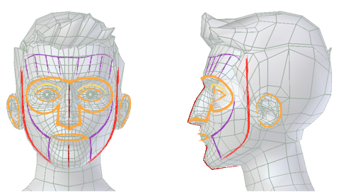
Các mốc khuôn mặt cơ bản.¶
Các đường màu cam đại diện cho những bone nên được đặt thành các vòng khép kín.
Các đường màu vàng đại diện cho những bone có vị trí phụ thuộc vào các vòng bone xung quanh.
Các đường màu đỏ đại diện cho các bone ở rìa ngoài.
Các đường màu tím đại diện cho các bone cầu nối dùng để phủ vùng da thịt bị biến dạng.
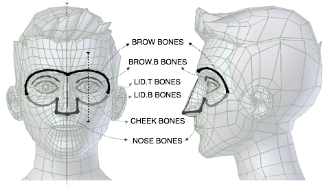
Các mốc vùng mắt-mũi.¶
Vùng vòng mắt-mũi được chia thành nhiều phần khác nhau được nhận diện bằng tên bone. Hãy làm theo hình để đặt các bone.
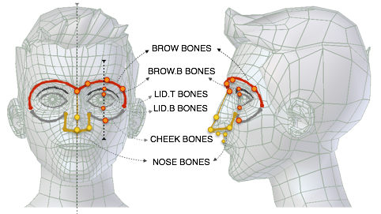
Vị trí bone vùng mắt-mũi.¶
Mẹo
Đặt bone vùng chân mày
Giữ các bone giữa trong "brow", "brow.b", "lid.t", "lid.b" và má thẳng hàng với nhau sẽ cho kết quả tốt hơn sau khi tạo rig.
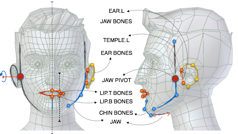
Vị trí bone vùng hàm-tai.¶
Vùng hàm-tai cũng được chia thành nhiều phần khác nhau được nhận diện bằng tên bone. Hãy làm theo hình để đặt các bone.
Mẹo
Đặt bone vùng hàm
Hãy cố đặt bone "ear.L" phủ phần vành tai gắn với xương hàm dưới. Làm tương tự với bone thái dương, cố phủ phần mà bạn không muốn di chuyển cùng hàm; cách này cũng giúp bạn xác định vị trí pivot của hàm.
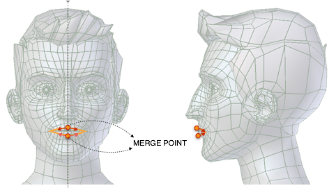
Điểm hợp nhất môi.¶
Cảnh báo
Khi di chuyển các bone khuôn mặt, cần bảo toàn các điểm hợp nhất, tức là bất cứ khi nào đầu hoặc đuôi của hai hay nhiều bone chồng lên nhau tại một điểm, chúng vẫn phải như vậy sau khi định vị lại. Việc tách rời một điểm hợp nhất có thể dẫn đến việc tạo ra nhiều control thay vì một, thậm chí gây ra lỗi.
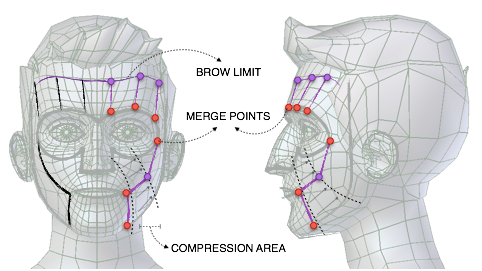
Các bone kéo giãn khuôn mặt.¶
Sau khi các bone khuôn mặt chính đã được đặt, dùng bone má để nối vùng mắt-mũi với vùng hàm-miệng. Sau đó làm tương tự với vùng chân mày. Quá trình này sẽ tự động xác định các vùng nén cơ khuôn mặt.
Đặt các bone mắt tại điểm pivot của mắt, hướng về phía khuôn mặt trên trục Y. Chiều dài của bone mắt nên tương ứng với bán kính của mắt.
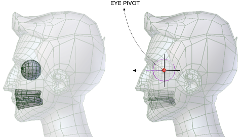
Vị trí pivot mắt.¶
Mẹo
Pivot mắt
Nếu mắt của bạn có dạng hình cầu, bạn có thể xác định pivot của nó bằng cách vào Edit Mode. Chọn hai vertex đối diện nhau trên kinh tuyến trung tâm -- hoặc hai cực đối diện -- rồi snap con trỏ về vùng chọn bằng . Nếu mắt của bạn là một hình cầu hoàn chỉnh và vị trí của nó chưa được apply, thì có thể dùng luôn trọng tâm của nó.
Cuối cùng, đặt các bone răng lên hình học răng của bạn và chuỗi bone lưỡi như mô tả trong hình.
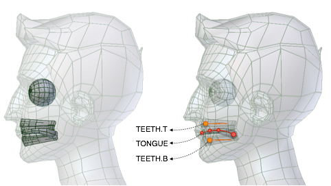
Vị trí miệng và răng.¶
Mẹo
Lưỡi
Lưỡi sẽ hoạt động tốt hơn nếu các bone được thẳng hàng tại trục đối xứng.
Trước khi tạo rig, hãy đảm bảo face master bone hướng lên trên.
Bone torso¶
Hãy bắt đầu bằng cách xác định trên nhân vật của bạn các vùng torso cơ bản để làm hướng dẫn khi đặt bone.
Đầu, ngực và xương chậu là những vùng cứng nên cần ít bone hơn. Việc sắp xếp edge loop tốt quanh ranh giới các vùng trên model sẽ giúp biến dạng đúng cách sau khi bind armature.
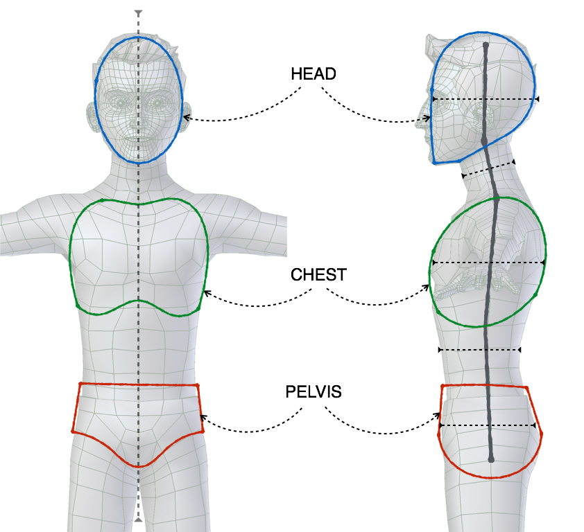
Các mốc torso.¶
Bắt đầu từ nhìn bên, đặt các bone spine chính, cố dùng một bone cho vùng cứng và hai bone cho vùng dẻo. Ngoài spine chính, torso còn được cung cấp thêm các bone xương chậu (đối trọng với sự gập của chân), hai control ngực và hai bone vai.
Dù các bone xương chậu sẽ không xuất hiện dưới dạng control trong rig hoàn thiện, chúng vẫn góp phần vào việc biến dạng.
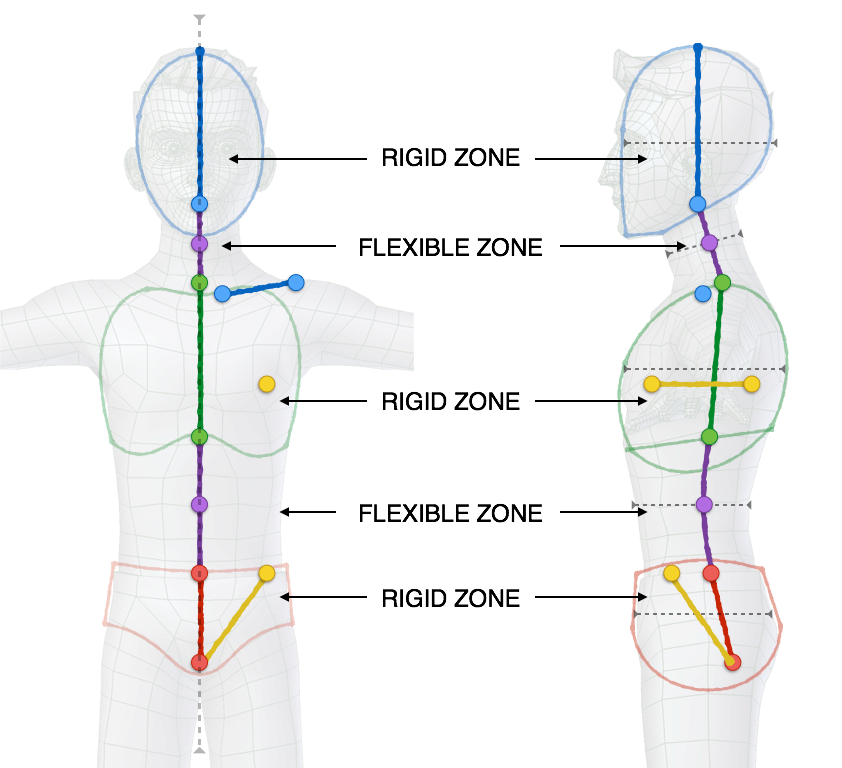
Định vị bone torso.¶
Mẹo
Đặt bone
Hãy cố giữ spine càng nằm giữa khối bao của mesh càng tốt, chỉ áp một độ lệch nhẹ về phía sau. Tương tự, hãy coi các bone vai là các bộ biến dạng tổng quát; đặt chúng quá lệch về phía trước -- nơi xương đòn đáng lẽ phải nằm -- có thể gây biến dạng không mong muốn.
Bone chi¶
Khi đặt các bone tay, hãy bắt đầu bằng một đường thẳng từ vai đến bàn tay cả khi nhìn từ phía trước lẫn từ trên xuống. Sau khi xong, chỉ cần thêm một độ cong nhẹ cho khuỷu tay. Việc này dễ dàng thực hiện bằng cách chuyển sang nhìn từ trên, vào Edit Mode của armature và trượt điểm nối bone giữa forearm và upper_arm hơi về phía trục Y của world.
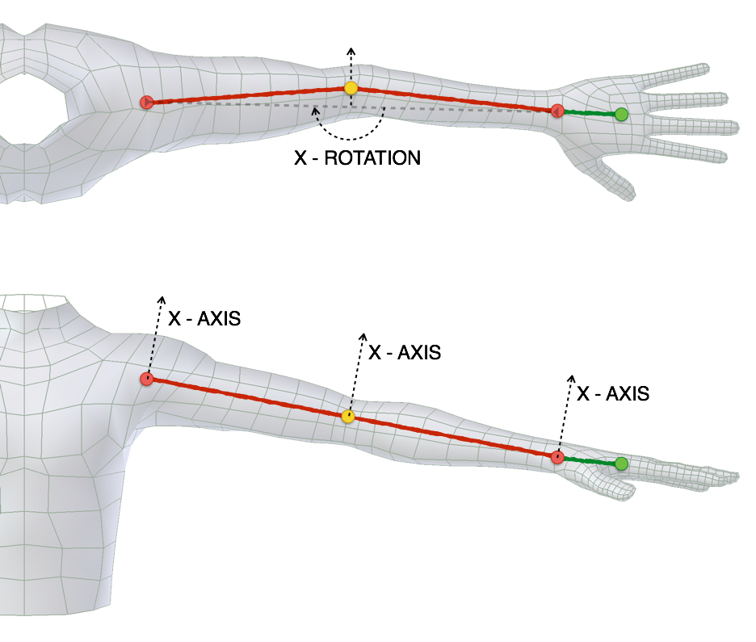
Định vị bone tay.¶
Với chân, bạn có thể làm theo quy trình tương tự. Bắt đầu bằng cách thẳng hàng các bone chân tạo một đường thẳng từ hông đến mắt cá, rồi đặt bàn chân và ngón chân cho phù hợp. Nhớ thêm một độ cong nhẹ cho đầu gối. Việc này dễ dàng thực hiện bằng cách chuyển sang nhìn từ bên, vào Edit Mode của armature và trượt điểm nối bone giữa thigh và shin hơi về phía trục Y của world.
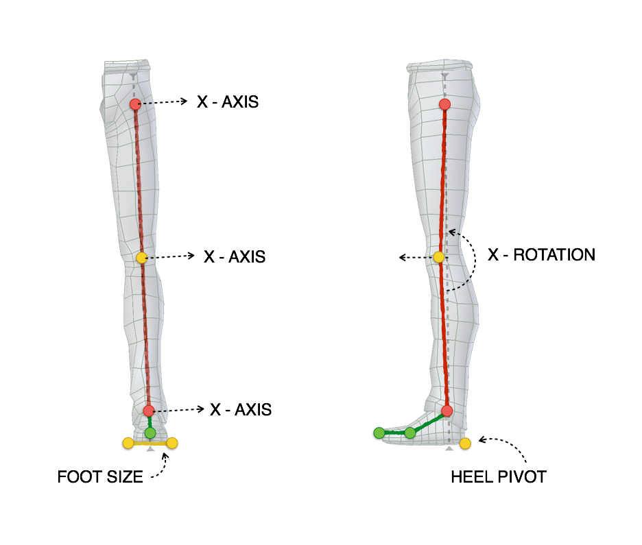
Định vị bone chân.¶
Cuối cùng, căn chỉnh bone gót bằng cách nhìn từ phía trước và đặt đầu cùng đuôi bone phủ hết bề ngang bàn chân. Sau đó, ở nhìn từ bên, căn bone tại điểm mà gót chân vừa chạm sàn.
Ghi chú
Từ phiên bản 0.5 trở đi, không còn cần căn chỉnh bone roll thủ công. Hàm tạo sẽ lo việc đó giúp bạn bằng cách đánh giá từ trục uốn (bend axis); chỉ cần thêm một độ cong nhẹ vào chi là xong! Nếu bạn cần kiểm soát nhiều hơn về hướng, hãy làm theo hướng dẫn trong phần Sử dụng nâng cao.
Bone ngón tay¶
Hãy bắt đầu bằng cách đặt từng khớp ngón tay vào đúng vị trí, ngón này đến ngón kia.
Mẹo
Đặt bone ngón tay
Một cách dễ dàng và hiệu quả để thực hiện thao tác này là chọn trên mesh edge loop tương ứng trong Edit Mode và dùng snap Cursor to Selection. Sau đó bạn có thể snap bone đến loop tương ứng bằng snap Selection to Cursor.
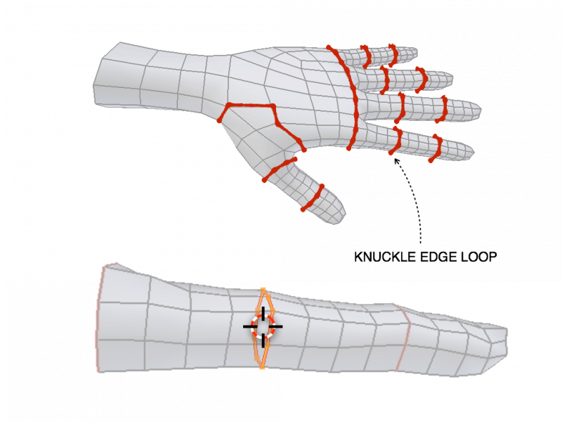
Edge loop khớp ngón tay và snap con trỏ.¶
Hoàn tất việc định vị bằng cách chú ý đến bone roll (trục X được đặt làm trục uốn).
Mẹo
Bone Roll
Việc căn chỉnh trục ngón tay có thể dễ dàng được nhất quán bằng cách chọn tất cả bone ngón tay và tính lại bone roll qua .
Ngón cái có thể cần tinh chỉnh nhiều hơn tùy vào topology mesh của nhân vật, thường thì là điểm khởi đầu tốt.
Khi bone roll đã nhất quán, hãy thử tạo rig và scale các master control ngón tay. Điều này sẽ khiến các ngón tay cong lại. Nếu chúng xoay sai trục, hãy đổi tham số Bend Rotation Axis trong tham số của ngón tay đầu tiên dưới Rigify Type.
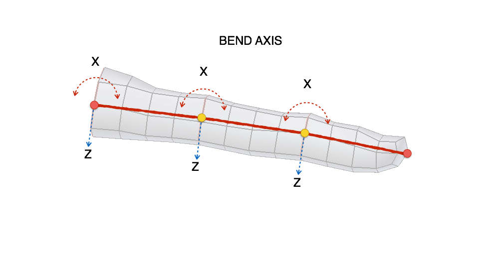
Trục uốn ngón tay.¶
Khi các ngón tay đã vào đúng vị trí, tiếp tục đặt các bone lòng bàn tay.
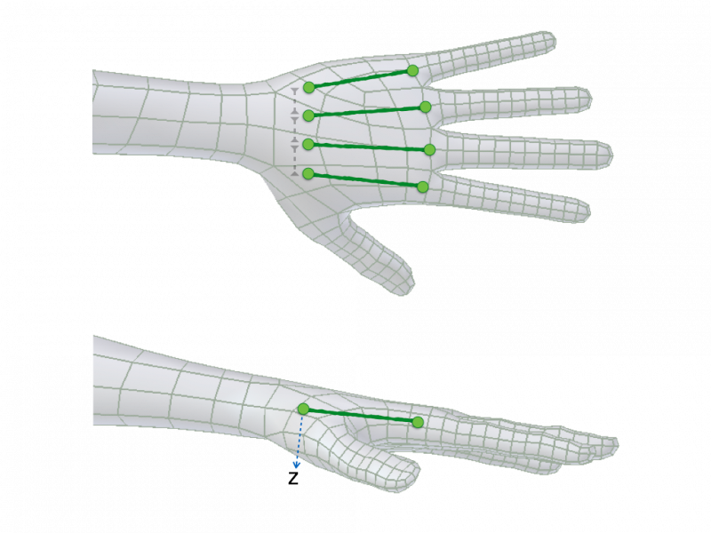
Căn chỉnh lòng bàn tay.¶
Mẹo
Đặt bone lòng bàn tay
Hãy cố giữ đầu các bone lòng bàn tay cách nhau một khoảng nhỏ. Khoảng cách này là cần thiết để Rigify xác định hệ thống phân cấp control của lòng bàn tay. Việc căn chỉnh trục lòng bàn tay dễ dàng thực hiện bằng cách chọn tất cả bone lòng bàn tay và tính lại bone roll qua .
Xem thêm
Để biết thông tin chi tiết hơn về bone và roll, hãy tham khảo Bone Structure và Bone Roll.